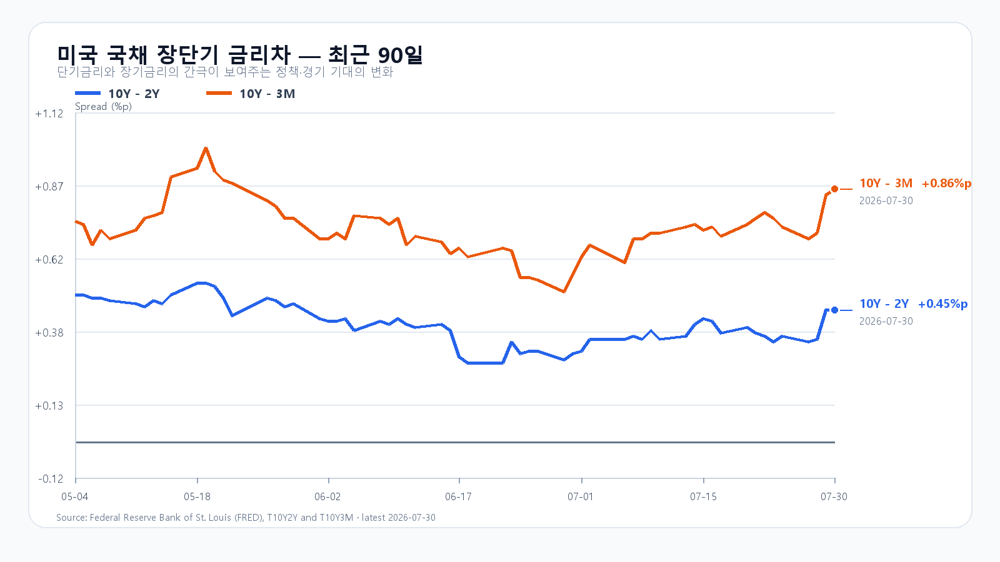
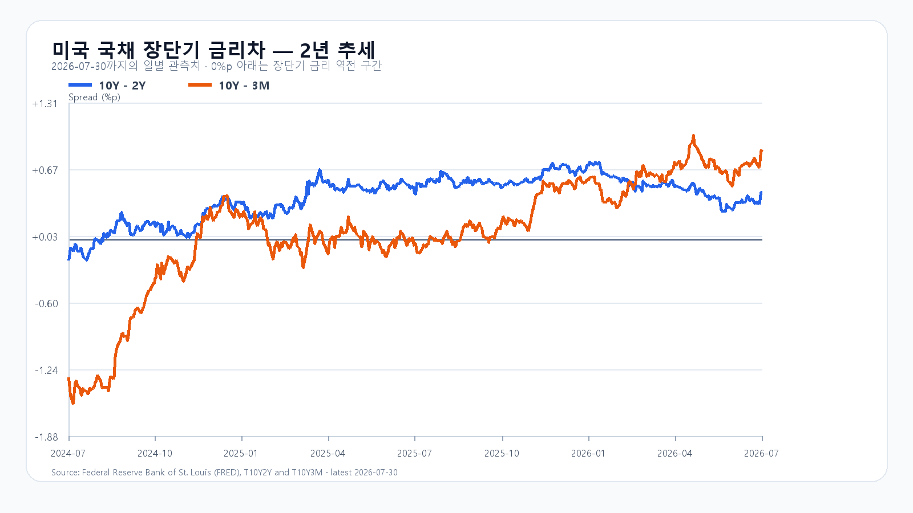

오늘의 한 문장
밤사이 반도체 반등에는 두 층이 겹쳤습니다. 대형 AI 공개주식 매각이 Citadel의 블록 인수로 정리되며 수급 압력이 낮아졌고, 삼성전자의 장기계약은 메모리 생산능력 자체가 부족하다는 사실을 다시 확인했습니다.
기본 시나리오는 KOSPI 5,650~5,850의 반등 시도입니다. 5,850을 넘어 5,976의 전일 고점까지 회복하려면 삼성전자와 SK하이닉스가 함께 시초가를 지키고, 외국인 현물과 선물이 같은 방향을 보여야 합니다.
호재의 크기보다 중요한 것은 갭상승 뒤에도 매수 주체가 남아 있는가입니다.
밤사이 시장을 바꾼 두 사건
AI 공개주식 북이 Citadel로 넘어갔다
Axios와 월스트리트저널은 전 OpenAI 연구원 레오폴드 아심브레너가 이끄는 Situational Awareness가 AI주 손실 뒤 공개주식 포트폴리오를 Citadel에 넘겼다고 보도했습니다. 최근 운용자산은 200억~240억 달러로 보도됐지만, 이 숫자는 손실액이나 매각대금이 아닙니다.
매각 범위는 매체마다 표현이 다릅니다. Axios는 공개주식 전량, 월스트리트저널은 포트폴리오 대부분과 차입금으로 조성된 부분의 인수를 전했습니다. Anthropic 같은 사모자산과 일부 고객자본 포지션은 남았다는 보도가 있어 펀드 폐쇄나 파산으로 부를 단계는 아닙니다. 정확한 표현은 공개주식 북의 대규모 청산과 블록 매각입니다.
CNBC는 SK하이닉스 같은 AI 인프라 롱 포지션의 하락과 일부 소프트웨어 숏의 역행을 손실 요인으로 짚었습니다. 매각 완료 보도 뒤 Micron·AMD·반도체 ETF가 급반등한 흐름은 강제 매도자 제거와 맞닿아 있습니다. 다만 Amazon 실적과 AI CAPEX 호재도 같은 날 나왔으므로 반등 전체를 한 펀드의 거래로 설명할 수는 없습니다.
삼성전자는 데이터센터 고객 5곳과 장기계약을 확보했다
AP가 전한 삼성전자 2분기 실적 설명에서 회사는 글로벌 대형 데이터센터 고객 5곳과 장기 메모리 공급계약을 확보했고 추가 고객과도 협상 중이라고 밝혔습니다. 고객명, 개별 제품 물량, 계약금액과 정확한 기간은 공개하지 않았습니다. AWS·Google·Meta·Oracle·Microsoft는 매체가 제시한 가능성이지 삼성전자가 확인한 상대가 아닙니다.
삼성전자 공식 자료는 HBM4뿐 아니라 서버 DDR5·SOCAMM2와 기업용 SSD 수요가 증산 속도를 앞서 공급 제약이 이어질 것으로 봤습니다. 데이터센터 고객이 여러 해의 물량을 미리 확보하려는 움직임은 HBM 한 품목을 넘어 서버 DRAM과 기업용 NAND까지 생산능력 경쟁이 번졌다는 신호입니다.
7월 25일 발표된 Broadcom 협력은 별개의 사안입니다. 향후 5년간 2,000억 달러를 넘을 것으로 예상되는 메모리·파운드리·패키징 협력 MOU이며, 이번 실적콜의 고객 5곳 장기계약과 같은 확정 공급 공시로 합쳐 계산하면 안 됩니다.
주가 반등에는 매도 압력의 이동이, 중기 방향에는 생산능력의 부족이 각각 작동하고 있습니다.
전일 KOSPI가 보여준 수급의 모순
7월 30일 KOSPI는 5,593.56으로 1.23% 하락했습니다. 장중 5,976.82까지 올랐다가 5,547.41까지 내려간 뒤 저점 부근에서 마감했습니다. 삼성전자는 207,000원으로 0.72%, SK하이닉스는 1,322,000원으로 5.64% 하락했습니다. KODEX 레버리지는 75,595원으로 4.33% 내렸습니다.
| 구분 | 순매매 | 해석 |
|---|---|---|
| 개인 | -1조4,309억원 | 장중 반등을 이용한 현금화 |
| 외국인 | +1조3,280억원 | 현물 바스켓 유입 |
| 기관 | +805억원 | 방향성은 제한적 |
| 프로그램 비차익 | +1조3,546억원 | 대형주 바스켓 매수 |
지수는 내렸지만 상승 종목은 609개, 하락 종목은 277개였습니다. 외국인이 1조원 넘게 사고 상승 종목이 더 많았는데도 지수가 밀렸다는 사실은 시장 전체의 투매보다 SK하이닉스와 반도체 대형주의 지수 영향이 훨씬 컸다는 뜻입니다.
KOSPI200 선물의 투자 주체별 수급은 독립적으로 확인하지 못했습니다. 따라서 오늘은 개장 뒤 선물 방향을 새로 확인해야 하며, 전일 현물 순매수만으로 외국인의 전면적인 위험선호 복귀를 단정할 수 없습니다.
미국 반도체와 Amazon의 새 신호
미국 7월 30일 정규장에서 S&P 500은 1.7%, 나스닥 종합은 2.8% 올랐습니다. 반도체의 반등은 더 강했습니다.
| 자산 | 등락률 | 종가 위치 |
|---|---|---|
| QQQ | +3.30% | 일중 범위 상단 86.7% |
| SOXX | +8.50% | 상단 75.2% |
| SMH | +6.88% | 상단 71.4% |
| Micron | +18.36% | 상단 91.6% |
| AMD | +13.00% | 상단 68.4% |
| Broadcom | +4.73% | 상단 92.5% |
Micron과 Broadcom이 고가 부근에서 끝났습니다. Nvidia 한 종목의 반등이 아니라 메모리·ASIC·반도체 ETF로 매수가 퍼졌습니다. 다만 이 움직임에는 실적과 CAPEX를 보고 들어온 신규 매수뿐 아니라 Situational Awareness의 공개주식 북 이전으로 오버행이 줄어든 효과와 숏커버가 함께 섞였을 가능성이 있습니다.
Amazon의 2분기 실적은 이 흐름을 한 단계 더 강화했습니다. AWS 매출은 37% 늘어 18분기 만의 가장 빠른 성장률을 기록했고, AI와 자체 칩 사업은 각각 연환산 매출 250억 달러를 넘었습니다. 회사는 2026년 설비투자 계획을 2,200억 달러로 높였으며 확보한 용량만으로 올해 수요를 모두 맞추기 어렵다고 설명했습니다.
AI 투자 규모와 클라우드 매출이 함께 늘어난 점은 HBM·서버 DRAM·eSSD에 긍정적입니다. 다만 Apple은 매출과 이익이 예상을 웃돌았는데도 시간외에서 약세였습니다. 메모리 비용 상승과 제품 가격 인상은 공급 부족을 확인하는 동시에 고객사의 마진 부담도 보여줍니다.
메모리 실물 수급은 어디에 있는가
TrendForce의 7월 30일 18:10 GMT+8 공개값에서 DDR5 16Gb 4800/5600은 50.967달러로 0.07%, DDR4 8Gb 3200은 42.130달러로 0.21% 올랐습니다. DDR4 16Gb 3200은 84.976달러로 보합이었습니다.
| 품목 | 최신 신호 | 판단 |
|---|---|---|
| HBM·서버 DRAM | 고객 수요가 공급능력 초과 | 강한 긍정 |
| DDR5·DDR4 | 고점권 보합·소폭 상승 | 공급 제약 유지 |
| eSSD | AI 서버가 수요 견인 | 긍정 |
| 범용 NAND | 2027년 하반기 공급 완화 가능성 | 중기 차별화 |
삼성전자는 2분기 메모리 매출 120.8조원과 DRAM·NAND bit 판매, 서버 매출 비중의 사상 최고치를 발표했습니다. 하반기에는 HBM4·DDR5·SOCAMM2를 우선하고 HBM4E 첫 샘플을 주요 고객에게 보냈습니다. 여기에 데이터센터 고객 5곳의 장기계약까지 더해져 생산능력 부족이 일시적인 현물가격 문제가 아니라 고객의 조달 전략을 바꾸는 단계임을 보여줬습니다. SK하이닉스도 HBM4의 2분기 양산 출하와 고객 수요가 공급능력을 웃도는 장기계약 상황을 확인했습니다.
주가가 크게 흔들렸지만 실물 수요가 꺾였다는 증거는 아직 없습니다. 다만 2027년 전망에서 DRAM은 타이트한 반면 NAND는 하반기부터 완화될 가능성이 제시됐습니다. 메모리 전체를 한 방향으로 묶기보다 HBM·DRAM과 범용 NAND를 나눠 봐야 합니다.
4.68% 금리가 남긴 제약
미국 2분기 GDP는 연율 1.5%로 1분기 2.1%보다 둔화했습니다. 6월 PCE 물가는 전년 대비 3.7%, 근원 PCE는 3.3%였습니다. 성장 속도는 느려졌지만 물가가 연준 목표보다 높은 조합입니다. 7월 FOMC에서도 세 명의 위원이 25bp 인상을 선호했습니다.
미국 재무부의 7월 30일 값은 3개월 3.82%, 2년 4.23%, 10년 4.68%입니다. 같은 날 장단기 차이는 10년-2년 +0.45%포인트, 10년-3개월 +0.86%포인트였습니다.


출처: FRED 10Y-2Y, FRED 10Y-3M, 미국 재무부.
오늘의 확인 순서
| 시각 | 이벤트 | 예상 / 이전 | 핵심 |
|---|---|---|---|
| 10:30 | 중국 7월 공식 제조업 PMI | 49.9 / 50.3 | 50선과 한국 수출주 확산 |
| 21:30 | 미국 2분기 고용비용지수 | 0.8% / 0.9% | 임금 물가와 10년물 |
| 22:45 | 미국 7월 Chicago PMI | 55.9 / 56.7 | 경기 확장과 금리의 균형 |
중국 공식 PMI는 한국장 중 발표됩니다. 50선을 지키면 반도체 외 경기민감주로 반등이 퍼질 여지가 커집니다. 49.9를 크게 밑돌면 미국 반도체 호재에도 오전 상승폭이 줄 수 있습니다.
미국 고용비용지수는 오늘 밤의 핵심입니다. 0.8% 이하라면 금리 부담을 일부 낮출 수 있지만, 0.9% 이상이면 PCE 3%대와 FOMC의 긴축 경계가 다시 부각될 수 있습니다.
KOSPI·KODEX 시나리오
기본: KOSPI 5,650~5,850
미국 반도체와 Amazon 호재로 상승 출발하되, 전일 5,800~5,970 구간에서 확인된 매물과 10년물 4.68%가 상단을 제한하는 흐름입니다. 가장 가능성이 높은 범위입니다.
강세: KOSPI 5,850~6,000
삼성전자와 SK하이닉스가 모두 갭상승 뒤 시초가를 지키고, 외국인 현물과 KOSPI200 선물이 동반 순매수하며, 달러/원이 1,430원 아래에 머무는 경우입니다. 중국 PMI가 50선 부근을 지키고 금융·자동차·산업재로 상승이 확산돼야 전일 고점 5,976.82를 다시 시험할 수 있습니다.
약세: KOSPI 5,450~5,650
상승 출발 뒤 반도체 두 종목이 시초가 아래로 밀리고, 외국인 선물이 매도로 돌아서며, 달러/원이 1,440원을 넘는 조합입니다. KOSPI가 전일 저점 5,547.41을 빠르게 회복하지 못하면 미국 호재가 기존 손실 포지션의 매도 기회로 쓰였다고 봐야 합니다.
| 가격대 | 의미 |
|---|---|
| 75,000~75,595원 | 전일 종가 중심 1차 지지 |
| 80,000~80,500원 | 전일 오전 매물과 흐름 복원 기준 |
| 84,000원 이상 | KOSPI 5,850 이상 안착이 필요한 구간 |
전일 많이 내렸다는 사실만으로 바닥을 가정하지 않습니다. 80,000원 회복 뒤 삼성전자·SK하이닉스의 동반 양봉과 외국인 현·선물 수급이 확인돼야 공격 점수를 더 높일 수 있습니다.
오늘 점수는 공격 50, 관망 40, 방어 10입니다. 개장 강도보다 10시 30분 중국 PMI 이후에도 반도체와 시장 폭이 함께 유지되는지가 더 중요합니다.
자주 묻는 질문
아심브레너의 헤지펀드가 완전히 청산된 것인가요?
현재 확인된 범위는 Situational Awareness가 AI주 손실 뒤 공개주식 포트폴리오의 대부분 또는 전부를 Citadel에 넘겼다는 것입니다. Anthropic 등 사모자산은 남았다는 보도가 있어 펀드 폐쇄나 파산으로 단정할 수 없습니다.
메모리 반도체 수급이 다시 좋아진 것인가요?
DRAM 현물가격은 이미 높은 수준에서 보합 또는 소폭 상승하고 있고, 삼성전자·SK하이닉스도 HBM과 서버 메모리의 초과수요를 확인했습니다. 새로 좋아졌다기보다 강한 실물 수급이 계속되는 가운데 주가가 금리와 수급 조정을 받은 상황에 가깝습니다.
오늘 장에서 무엇을 먼저 확인해야 하나요?
삼성전자와 SK하이닉스의 시초가 유지, 외국인 KOSPI200 선물, 달러/원 1,430원 아래 안정, 오전 10시 30분 중국 제조업 PMI, KOSPI 5,850선 안착 여부를 순서대로 확인할 필요가 있습니다.
이 글은 공개 자료와 고정 시점 시세를 바탕으로 작성한 정보 자료입니다. 특정 상품의 매수·매도나 투자 성과를 보장하지 않습니다.